Detectando Flujo
Casi toda la astronomía es el estudio de la luz. En esta clase abrimos el fotón: qué información trae (longitud de onda, dirección, tiempo de llegada, intensidad, polarización), cómo se relaciona con la temperatura de un cuerpo negro, y cómo lo detectamos a lo largo de todo el espectro electromagnético —del ojo y la fotografía al CCD, del efecto fotoeléctrico a las antenas de radio, los espejos de rayos X y los tanques Cherenkov.
La astronomía es una ciencia notablemente pasiva: a diferencia del químico o el biólogo, que meten las manos en el laboratorio y modifican el experimento, el astrónomo solo puede recibir lo que el universo le manda y hacer todo lo posible por verlo de la forma más limpia posible. Y lo que recibe son, casi siempre, fotones. Esta clase trata de ese fotón: cuánta información carga, cómo la leemos, y con qué tecnología —porque cada tipo de luz, del radio a los rayos gamma, exige un detector distinto y habilita una ciencia distinta. Cerramos con la cantidad que da título a la clase: el flujo, la potencia por unidad de área que nos llega de una fuente, y la curiosa escala logarítmica de magnitudes con que los astrónomos lo medimos.
Mensajeros del cosmos: ciencia pasiva
El astrónomo no experimenta: recibe. ¿Qué puede recibir?
El profesor parte con una idea ordenadora: la astronomía es observación pasiva. El químico mezcla reactivos, mide temperaturas, repite con mil variaciones; el astrónomo, en cambio, solo puede captar lo que le llega y limpiarlo lo mejor posible de las distorsiones que mete la atmósfera y el propio instrumento. Hasta hace poco, «lo que llega» era exclusivamente luz. Hoy la lista de mensajeros es más rica:
- Radiación electromagnética (radio → rayos gamma): el grueso de la astronomía. Aunque digamos «fotón», cubre desde ondas de radio hasta rayos gamma.
- Rayos cósmicos: partículas cargadas muy energéticas (no son luz) que llegan del espacio.
- Neutrinos: partículas casi sin masa que apenas interactúan con la materia.
- Ondas gravitacionales: la «vedette» reciente, producidas en los choques más energéticos del universo (fusiones de agujeros negros o de estrellas de neutrones).
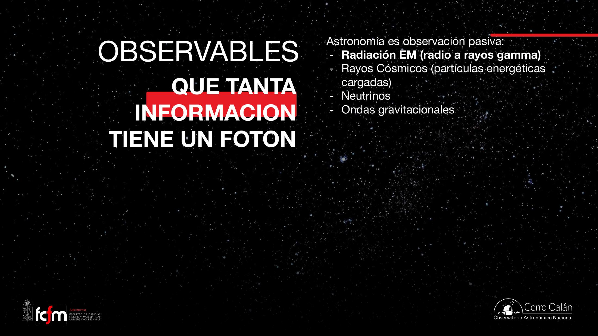
En el centro del Sol, las reacciones nucleares que convierten hidrógeno en helio producen neutrinos en cantidades enormes. Como casi no interactúan, escapan del Sol sin problema (su camino libre medio supera la unidad astronómica), mientras que un fotón producido en el centro tarda ~un millón de años en salir, absorbido y reemitido una y otra vez. Lo intrigante: detectamos solo un tercio de los neutrinos esperados. La explicación —y la mejor evidencia de que el neutrino tiene algo de masa— es que oscilan entre sus tres «sabores»; detectamos un sabor, y por eso medimos un tercio.
Pensar la astronomía como un sistema pasivo de adquisición de señal ayuda: no controlas la fuente ni puedes repetir el «experimento» a voluntad. Toda la pega está en el front-end (óptica + detector) y en separar la señal del ruido instrumental y atmosférico. Es ingeniería de instrumentación pura: maximizar relación señal/ruido sobre una entrada que no eliges.
La luz: onda y partícula
Maxwell la describe como onda; Planck y Einstein, como paquetes de energía.
Las ecuaciones de Maxwell condensan el electromagnetismo. Combinándolas se obtiene una ecuación de onda cuya solución se escribe como función de : la oscilación espacial queda atada a la oscilación temporal, como una cuerda con extremos fijos que vibra. Esa es la firma de una onda.
En la onda, el campo eléctrico oscila perpendicular al campo magnético, y ambos son perpendiculares a la dirección de propagación (el vector ). Pero la luz también es partícula: su energía viene en paquetes enteros, múltiplos de la constante de Planck por la frecuencia.
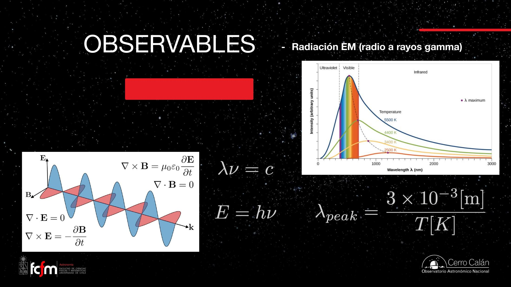
«Esto es típico segundo o tercero de ingeniería»: derivar la ecuación de onda desde Maxwell es el mismo ejercicio de cálculo vectorial que ya conoces. La novedad astronómica es interpretar como una constante fundamental medible a partir de propiedades eléctricas y magnéticas del vacío.
Cuerpo negro y ley de Wien
Un cuerpo en equilibrio térmico emite en todas las longitudes de onda, con un pico que delata su temperatura.
Un cuerpo negro es un objeto en equilibrio termodinámico: algo con una temperatura estable que emite radiación en todas las longitudes de onda. Tú mismo, a ~300 K, emites principalmente en el infrarrojo (terahertz), pero también un poquito en todas las bandas. La forma de esa curva depende solo de la temperatura, y su pico se corre hacia el azul (longitudes de onda más cortas) a medida que la temperatura sube. Esa es la ley de Wien:
La curva del cuerpo negro se puede dibujar de varias maneras: energía por unidad de longitud de onda, energía por unidad de frecuencia, o número de fotones. Como , el lugar donde hay más fotones no coincide con el de más energía. Por eso el «color» de un cuerpo negro depende de qué cantidad estés graficando: es una sutileza importante a la hora de interpretar un espectro.
El espectro EM: tamaño, frecuencia, temperatura
«Tipos de luz» son solo tramos de un continuo, divididos un poco arbitrariamente.
Hablar de radio, infrarrojo, visible, rayos X… es como elegir los bins de un histograma: decidimos de forma algo arbitraria dónde empieza y termina cada banda. Lo físico detrás es siempre lo mismo: longitud de onda, frecuencia y (vía cuerpo negro) temperatura asociada. El profesor recomienda pensar en tamaños, que son más intuitivos que las frecuencias:
- Radio: longitudes de onda de metros a kilómetros. Por eso las antenas que captan radio débil miden más de 100 m (Arecibo, FAST en China). De ahí también la idea de poner una antena gigante en el lado oscuro de la Luna.
- Visible: ~0,5 micrón (medio millonésimo de metro). Si fuéramos del tamaño de una hormiga, esa longitud nos parecería «de tamaño manejable».
- Rayos X y gamma: longitudes cada vez más pequeñas, comparables a átomos y núcleos.
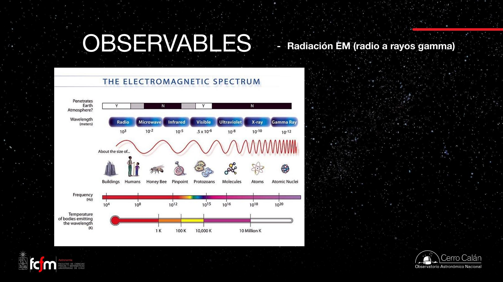
Para interactuar con algo, conviene usar luz de tamaño comparable a ese algo. La analogía del profesor: una piedra contra un bus. Con muy poca energía rebota; con energía relativista lo atraviesa dejando un boquete; pero con energía comparable pasan cosas complejas (rompe vidrios, rebota). La interacción fotón–electrón depende de la longitud de onda del fotón: es como pasar entre las rejas de un puente —si la reja es mucho más grande que tú, ni la notas. Esto se cuantifica con la sección eficaz.
Los radioastrónomos prefieren hablar en frecuencia (GHz para microondas; las bandas de ALMA están en gigahertz). Para luz más energética que el visible, los prefijos griegos «se quedan chicos» y se vuelve a las longitudes de onda. Y como nosotros emitimos en el terahertz, estamos «en el dial» del infrarrojo lejano.
Polarización y parámetros de Stokes
Una propiedad «misteriosa» de la luz: cómo evoluciona el ángulo del campo eléctrico.
La polarización describe cómo oscila el campo eléctrico de la onda. Si sube y baja en una dirección fija, hablamos de polarización lineal; si el vector va rotando, de polarización circular (o elíptica, el caso general). Una carga —un electrón— «siente» el campo eléctrico con una fuerza : por eso una antena emisora hace oscilar electrones arriba y abajo, y una antena receptora reproduce esa misma oscilación. Así funcionan las radios.
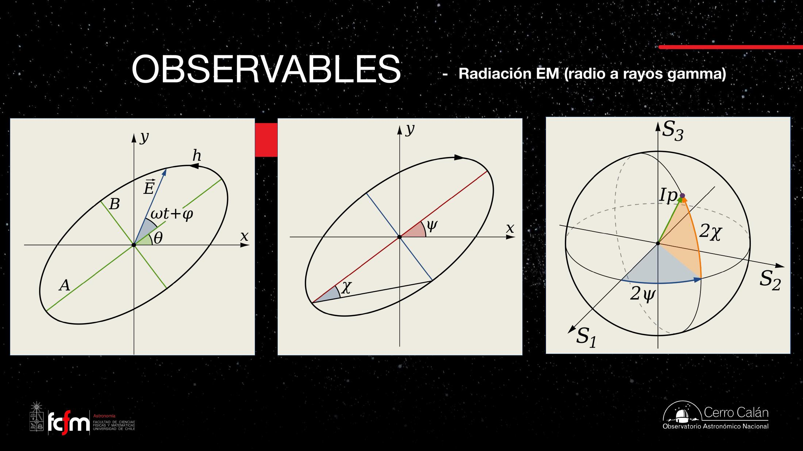
Cuando la luz rebota en el agua, la que oscila «de canto» mueve los electrones del agua de forma coherente y se reemite (reflejo); la que oscila en otra dirección tiende a ser absorbida. El reflejo queda parcialmente polarizado. Los lentes polarizados traen «rendijas» que bloquean ese ángulo y dejan pasar el otro —por eso quitan el brillo del agua (útil para pescar) y por eso a veces no ves la pantalla del celular en cierto ángulo.
Para cuantificar el estado de polarización se usan los parámetros de Stokes , basados en las amplitudes de las componentes y su desfase :
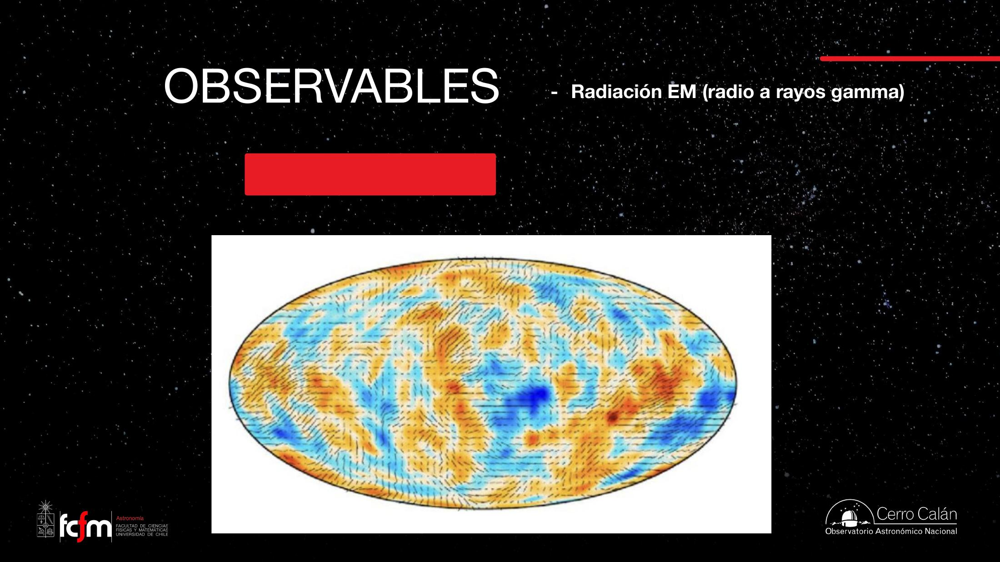
Los observables de un fotón
¿Qué le podemos extraer a la luz que llega? Toda la astronomía cabe en esta lista.
Resumiendo lo anterior, de un fotón (o de un flujo de fotones) podemos medir:
- Longitud de onda / frecuencia (y la temperatura asociada vía cuerpo negro, aunque la fuente no sea exactamente un cuerpo negro).
- Dirección de llegada (de dónde viene) y tiempo de llegada (cuándo lo detectamos).
- Intensidad según la longitud de onda: la SED (Spectral Energy Distribution), es decir cuánta energía por unidad de longitud de onda emite la fuente.
- Polarización y la fase (relación entre ondas), clave cuando combinamos luz recibida en distintos lugares.
Medir la intensidad es, en el fondo, hacer un muestreo: abrir el telescopio, recoger muchos fotones, clasificarlos por energía (un histograma) y multiplicar cada uno por su energía. La palabra «intensidad» viene prestada de la hidráulica: la intensidad es al flujo de luz lo que el caudal es al flujo de agua.
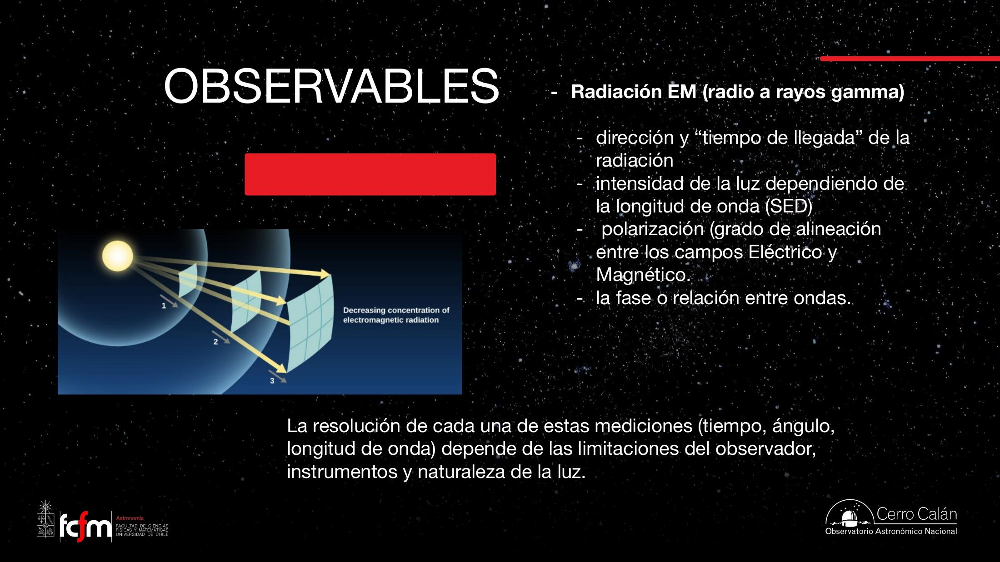
Una fuente que emite en todas direcciones reparte su energía sobre una esfera que crece. Como el área de la esfera va con , la energía por unidad de área —el flujo— cae como . Es la misma ley que la gravedad newtoniana y la base para conectar lo que recibimos (flujo) con lo que la fuente emite (luminosidad).
Del ojo a la fotografía
El primer detector de luz fue el ojo; el segundo, la emulsión fotográfica.
El ojo es un instrumento sorprendentemente simple en su principio: la córnea y el cristalino enfocan —doblan la luz para que los rayos que vienen de un mismo punto terminen en un mismo punto de la retina. Ahí, células fotosensibles convierten luz en señal: los bastones (muchos y muy sensibles, para poca luz, en blanco y negro) y los conos (concentrados en el centro/fóvea, sensibles al color en tres tipos: S, M, L ≈ azul, verde, rojo).
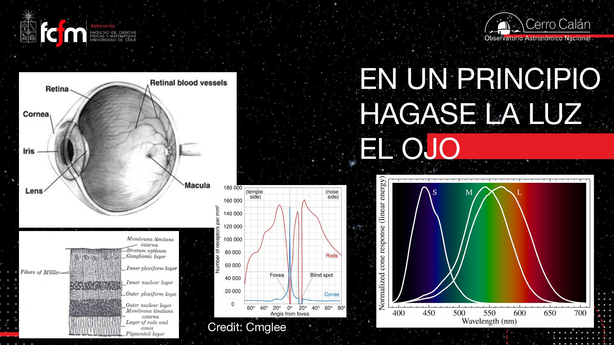
La tasa de datos que cruza el nervio óptico es sorprendentemente baja: gran parte de lo que «vemos» lo reconstruye el cerebro. Bajo una luz de sodio (una sola longitud de onda) terminamos viendo casi en blanco y negro; basta una pequeña fuente con todos los colores para que el cerebro «encienda» el color de nuevo. Importante para lo que viene: la mayoría de los CCD, imitando esta eficiencia, captan en blanco y negro (son mucho más eficientes así).
La fotografía fue el siguiente detector. Una emulsión de plata con bromo () se ioniza al exponerse a la luz; luego se fija la imagen retirando el bromo. La primera foto en la que aparece una persona muestra una avenida transitada casi vacía: solo se ven dos personas porque estuvieron quietas durante la larga exposición (una lustrándose los zapatos). Lo que se mueve, no se registra.
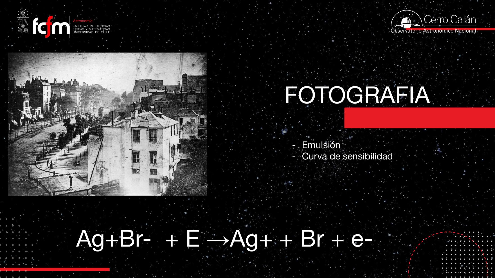
Doblar la luz —la pega de espejos y lentes— se hace de dos formas. En la reflexión (espejo), el ángulo de salida iguala al de incidencia. En la refracción (lente), el rayo cambia de dirección al entrar a un medio: el ángulo lo fija el índice de refracción, que depende de la velocidad de la luz en ese medio. Los lentes funcionan porque la luz viaja más lento en el vidrio que en el vacío (la misma razón por la que una cuchara parece quebrada dentro del agua).
Efecto fotoeléctrico → CCD
El Nobel de Einstein, y la cadena que lleva del fotomultiplicador a la cámara del Vera Rubin.
A Einstein le dieron el Nobel no por la relatividad, sino por el efecto fotoeléctrico: ciertos metales, al iluminarse, pierden electrones y generan un voltaje. Lo sorprendente es que subir la intensidad de luz roja no arranca electrones; hay que subir la energía (frecuencia) de los fotones. Existe un umbral: por debajo de cierta frecuencia, nada; por encima, empiezan a saltar electrones.
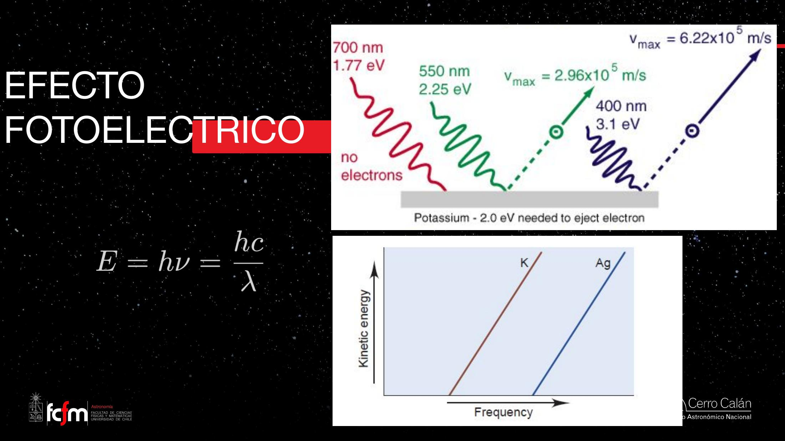
Si el voltaje generado se puede asociar a cuántos electrones se perdieron, entonces tenemos una forma precisa de medir la intensidad de la luz. Los primeros instrumentos fueron los fotomultiplicadores (tubos, años 40–50): un metal, una exposición, un voltaje. El problema es que un solo fotomultiplicador es como un balde para medir lluvia: mide cuánta luz cae, pero no hace una imagen.
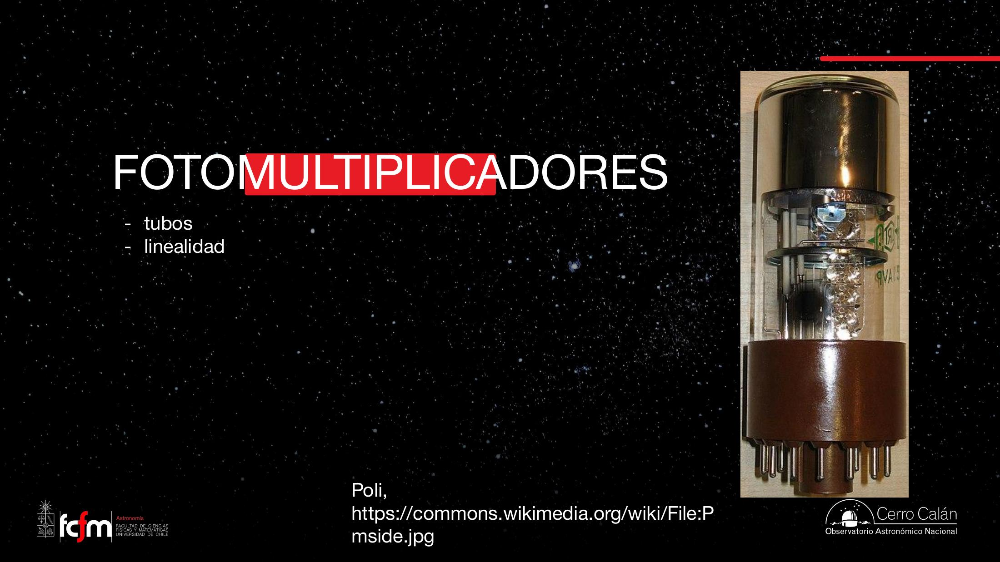
El CCD es justamente eso: una grilla de pequeños baldes (píxeles), cada uno un detector fotoeléctrico, llevado a la tecnología del microchip. Cambiamos los tubos por un chip de silicio y obtenemos una imagen completa de una vez. La cámara más grande del mundo es la del Vera C. Rubin Observatory (LSST): 3 gigapíxeles.
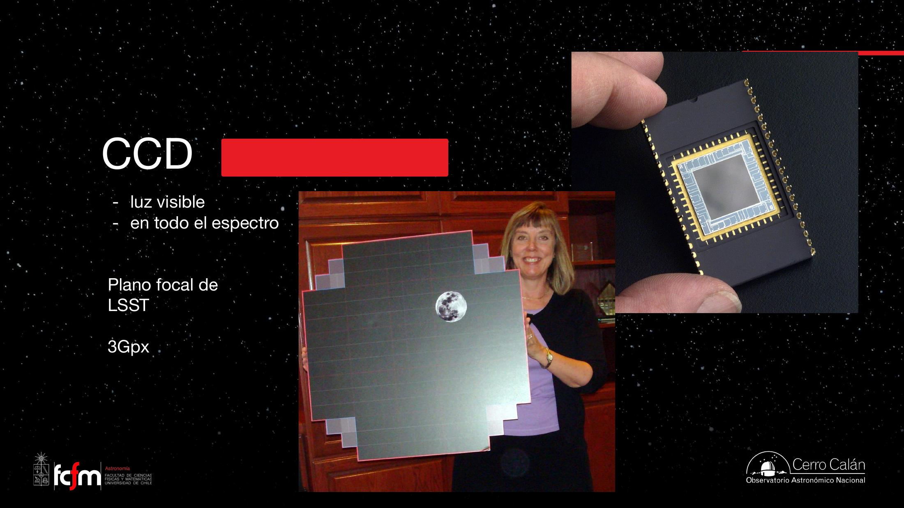
La analogía «balde de lluvia» es exacta como modelo de adquisición: cada píxel integra (acumula carga) durante la exposición y luego se lee. Es un conversor luz→carga→voltaje→número, exactamente como el sensor de tu cámara. El salto del fotomultiplicador al CCD es el mismo que de un sensor puntual a un array: pasar de medir una magnitud a muestrear espacialmente un campo.
Flujo, luminosidad e intensidad
La energía que emite una fuente, y la que nos llega tras diluirse por la distancia.
La luminosidad es la energía total que emite un objeto por segundo: su potencia, en watts. Para un cuerpo negro, integrar toda la curva (sumar todos los fotones por su energía) da el área bajo la curva, y el resultado es la ley de Stefan–Boltzmann (siglo XIX):
Esa potencia se diluye al alejarse: a una distancia , la misma luminosidad se reparte sobre una esfera de radio . La potencia por unidad de área que recibimos es el flujo:
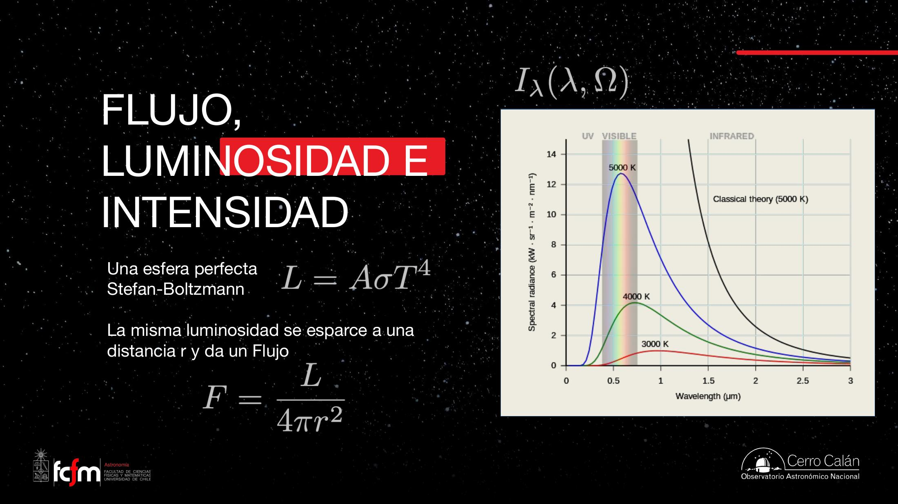
Magnitudes: la escala logarítmica
Una herencia de Hiparco que encaja con cómo el ojo percibe el brillo.
Los astrónomos no medimos el flujo en watts, sino en magnitudes: una escala logarítmica e invertida. Viene de Hiparco, que clasificó las estrellas de «primera clase» (las más brillantes) a «sexta» (las más débiles que veía a ojo). Resulta que esto encaja con la fisiología: el ojo percibe el brillo de forma logarítmica (lo que vemos «el doble de brillante» es en realidad ~10 veces más brillante).
Una estrella de magnitud 1 es 100 veces más brillante que una de magnitud 6; cada magnitud es un factor . A ojo, alguien con muy buena vista llega apenas a magnitud 6. Un telescopio de 10 cm alcanza ~magnitud 12; lo más débil fotografiado está cerca de magnitud 29. Como la escala es logarítmica, cada magnitud extra cuesta cada vez más. (El Sol tiene magnitud ~−27.)
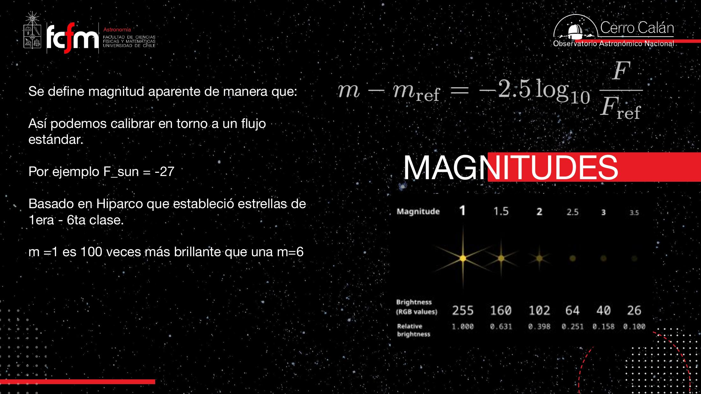
Universo multibanda y atmósfera
Cada longitud de onda muestra una física distinta —si la atmósfera la deja pasar.
Observar en distintas longitudes de onda no es redundante: revela fenómenos físicos diferentes. El Sol en visible se ve como una pelotita suave; en ultravioleta aparecen diferencias de temperatura y, a más energía, hierro ionizado siguiendo las líneas de campo magnético. La Vía Láctea cambia por completo de aspecto banda a banda: en radio e infrarrojo brillan las zonas de polvo y formación estelar que en el visible se ven como sombras oscuras.
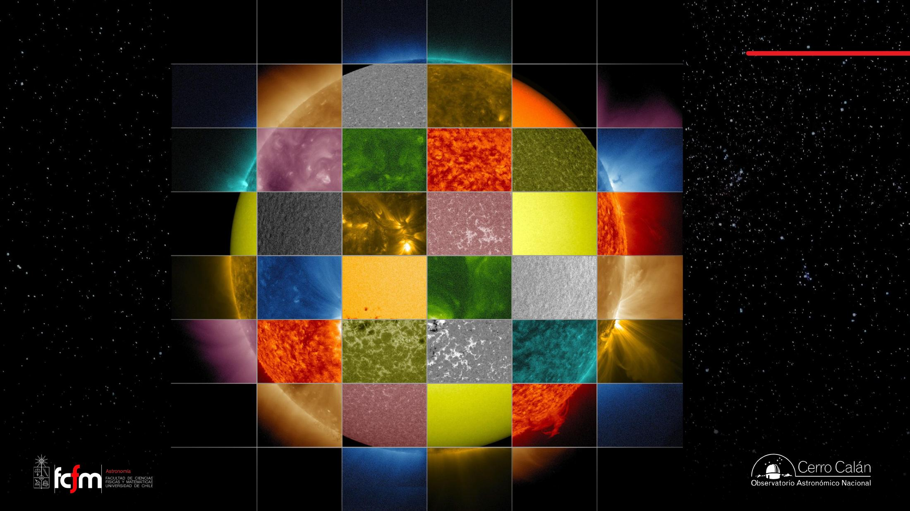
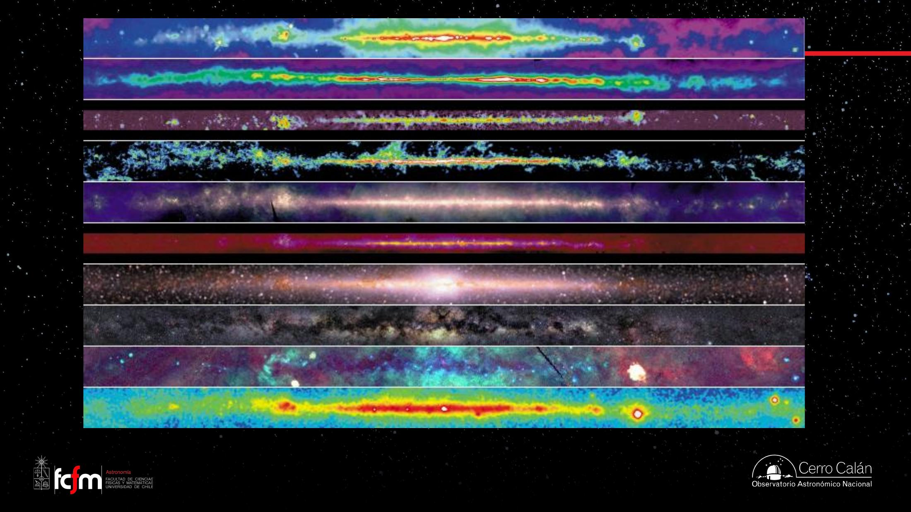
Pero hay un filtro inevitable: la atmósfera. Es muy eficiente absorbiendo todo lo más energético que el visible (rayos gamma, X, UV) —por eso esos telescopios deben ir al espacio (Hubble en UV, Chandra en rayos X, Swift en gamma). El visible alcanza a llegar a la superficie. En el infrarrojo hay bandas de absorción intensa, y en el radio la atmósfera es bastante transparente.

La luz visible tiene energía parecida a las transiciones electrónicas de los átomos: solo se absorbe en líneas muy precisas (las líneas telúricas), así que casi toda pasa. La luz infrarroja, menos energética, no mueve electrones pero sí hace rotar y vibrar moléculas como el agua (H₂O), el ozono (O₃) y el oxígeno: de ahí las anchas bandas de absorción del IR. Por eso ALMA está tan alto (poca atmósfera encima) para «pescar» algo del infrarrojo/submilimétrico.
Detectores a través del espectro
Cada banda exige una técnica distinta para captar y «doblar» la luz.
Visible: eficiencia cuántica
Comparar detectores totalmente distintos se hace en escala logarítmica de eficiencia cuántica (qué fracción de fotones produce señal). El ojo es ~1% eficiente (1 de cada 100 fotones); la fotografía, algo mejor; el fotomultiplicador, mucho más; y los CCD modernos se acercan al 100%. No solo registran información: aprovechan casi toda la luz que reciben.
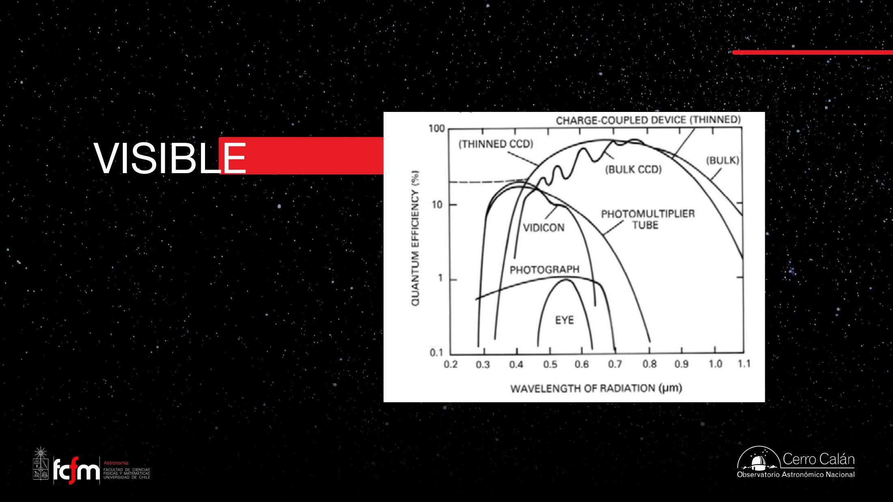
Infrarrojo: aleaciones y dithering
En el infrarrojo se usan aleaciones especiales (InGaAs, MCT/HgCdTe), menos eficientes que el silicio del visible y con más problemas: los píxeles «se echan a perder». Por eso el James Webb y casi todos los observatorios IR usan dithering: toman una foto, se corren un poquito, otra, otra (p. ej. 2×2 o 3×3) y las combinan, para que lo que se quiere observar caiga en algún momento sobre un píxel sano.
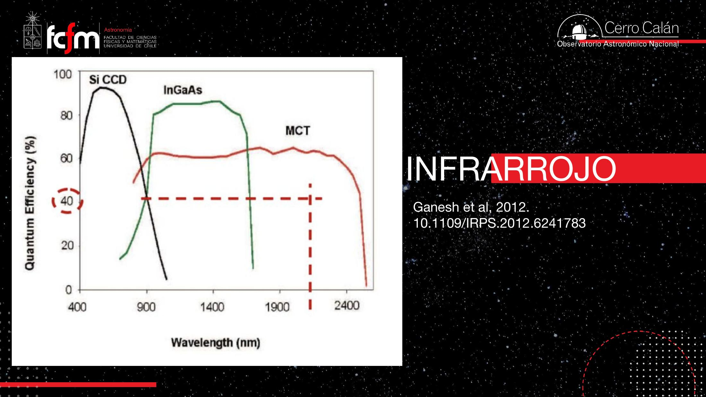
Radio: antenas, voltaje e interferometría
En radio no se «cuentan fotones»: la antena recibe la luz, la proyecta en el foco y un detector mide directamente la variación del campo eléctrico —una señal de voltaje en el tiempo. Se puede reconstruir una imagen moviendo la antena (cada apuntada es un «píxel») y barrer frecuencias para armar la SED. Pero lo potente es mezclar la señal de varias antenas: interferometría, como hace ALMA, para sintetizar una imagen de alta resolución.
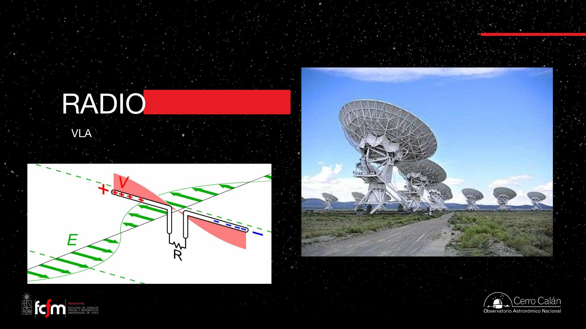
Rayos X: incidencia rasante
Los rayos X atraviesan un espejo normal. La solución (Chandra) son tubos concéntricos de metal con un ángulo muy pequeño: la luz incide casi rozando («de costado») y se desvía poco a poco hasta caer en el detector. La analogía: una bala que te da de frente te atraviesa; de costado, apenas te roza y se desvía. Para detectar la posición de fuentes se usa también la máscara codificada (Swift, INTEGRAL).
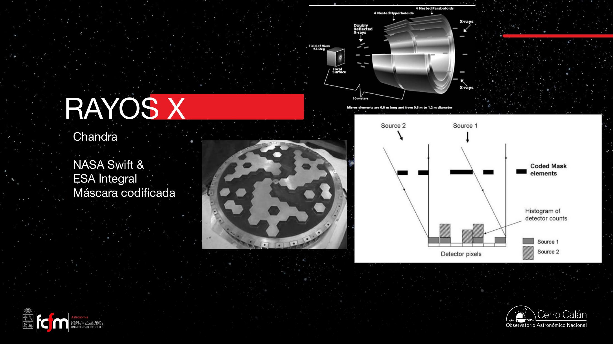
Rayos gamma y Cherenkov
Para rayos gamma se usa también máscara codificada. Y para las partículas realmente energéticas (un solo rayo cósmico puede tener la energía de una pelota de tenis a 100 km/h), se usa la radiación de Cherenkov: cuando una partícula viaja por el agua más rápido que la luz en ese medio, genera un destello azul (el análogo luminoso del «boom» sónico de un avión supersónico). Son tanques de agua con un detector; combinando varios se reconstruye de dónde vino la partícula. En el norte de Argentina hay arreglos de estos «tarros con cámara».
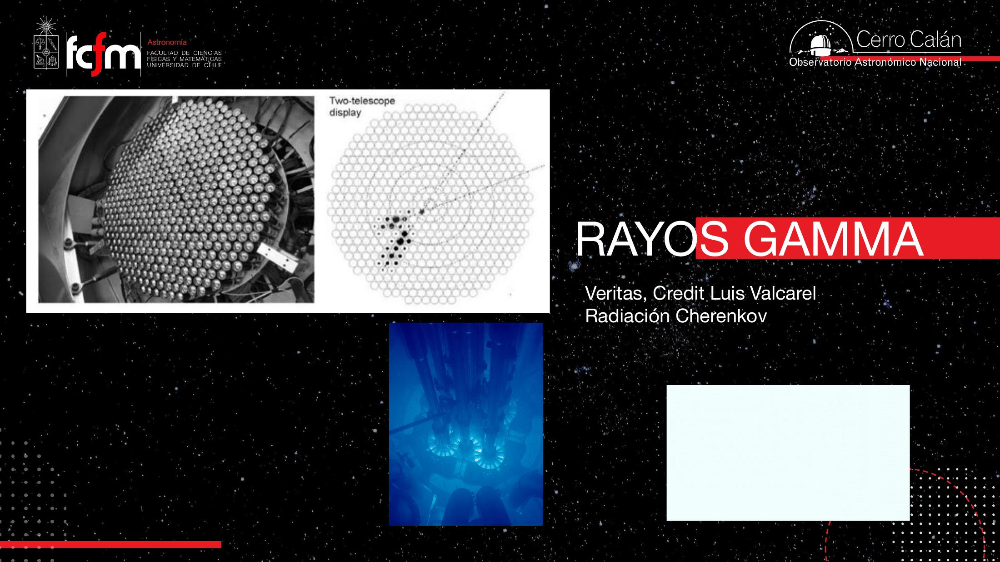
Toda la sección es un catálogo de transducciones: fotón→carga (CCD), fotón→voltaje (radio), partícula→destello→fotón (Cherenkov), dirección→patrón de sombras (máscara codificada). Y dos ideas de procesamiento de señales reaparecen: interferometría (combinar fases de varios sensores para sintetizar apertura) y reconstrucción a partir de un histograma de cuentas (problema inverso). Elegir el detector es elegir cómo convertir el mensajero en un número.
Impacto en astronomía y futuro
Medir flujo en el tiempo: curvas de luz, tránsitos y la próxima generación.
Más allá de las imágenes «lindas», medir el flujo en función del tiempo —una curva de luz— es enormemente poderoso. Si un planeta pasa por delante de su estrella (un tránsito), el brillo baja de forma periódica y diminuta, pero medible con precisión. Así Kepler detectó miles de exoplanetas.
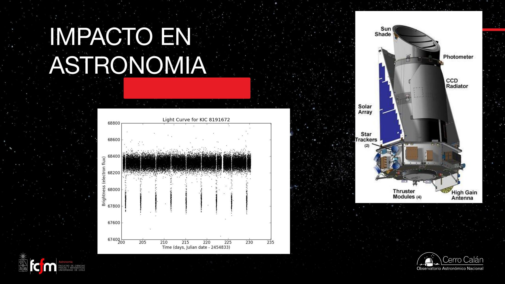
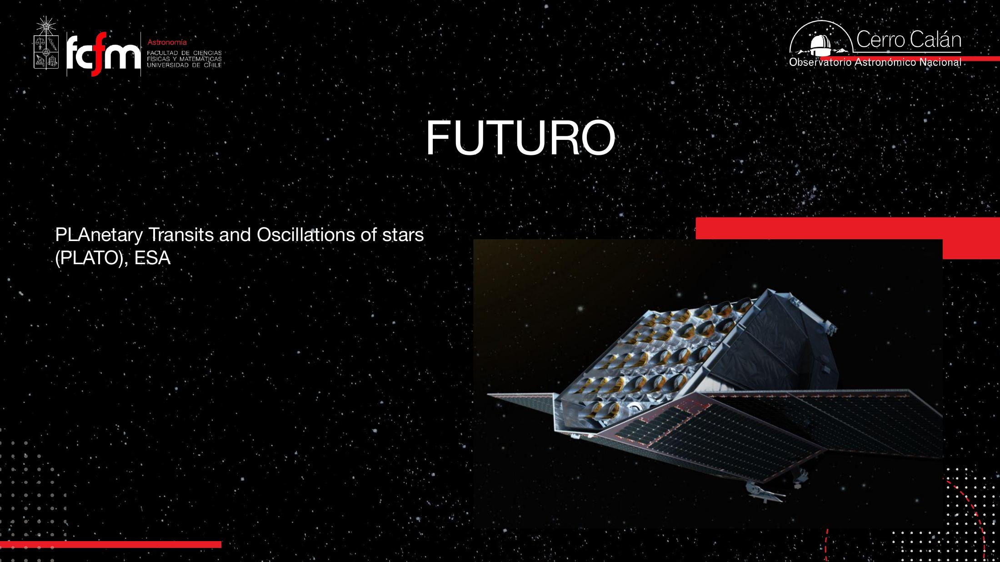
Mensaje central: casi toda la astronomía es leer fotones, y cada banda del espectro exige su propio detector y habilita su propia física. Vimos la luz como onda y partícula, el cuerpo negro y Wien, los observables (incluida la polarización), la cadena ojo→fotografía→fotomultiplicador→CCD, y las definiciones operativas de luminosidad, flujo y magnitud. Lo que no es radiación EM —ondas gravitacionales y neutrinos— se verá en cosmología y en estelar. Próximo paso natural: telescopios, foco, alineación y todas las correcciones que hacen que esta luz tan trabajada llegue limpia al detector.
Conceptos clave
Tabla de repaso rápido.
| Concepto | Qué es / valor | Por qué importa |
|---|---|---|
| Mensajeros | EM, rayos cósmicos, neutrinos, ondas gravitacionales | La astronomía es observación pasiva; cuatro canales hoy |
| Onda | , | La luz es onda EM (Maxwell); |
| Partícula | Energía en cuantos; base de los detectores que cuentan fotones | |
| Ley de Wien | El pico se corre al azul al subir T: temperatura ↔ color | |
| Sección eficaz | «Tamaño» de interacción | Se interactúa mejor con luz de tamaño comparable a la materia |
| Polarización | Lineal / circular / elíptica | Lentes polarizados, CMB, discos protoplanetarios |
| Parámetros de Stokes | , | Codifican el estado de polarización |
| Observables | λ, dirección, tiempo, intensidad/SED, polarización, fase | Todo lo que se le puede extraer a un fotón |
| Efecto fotoeléctrico | (función de trabajo) | Nobel de Einstein; convierte luz en voltaje medible |
| CCD | Grilla de píxeles fotoeléctricos; LSST 3 Gpx | «Muchos baldes»: imagen + eficiencia ~100% |
| Luminosidad | (Stefan–Boltzmann) | Energía total emitida por segundo (watts) |
| Flujo | Potencia/área recibida; cae como | |
| Magnitud | Escala log e invertida; mayor magnitud = más débil | |
| Ventanas atmosféricas | Óptica y radio; IR con bandas; gamma/X/UV al espacio | La atmósfera filtra qué se observa desde tierra |
| Detectores por banda | CCD, IR+dithering, radio/voltaje, X rasante, Cherenkov | Cada tipo de luz exige su técnica |
| Curva de luz | Flujo vs. tiempo (Kepler, PLATO) | Tránsitos: detección de exoplanetas |
Exámenes de práctica
10 exámenes de 5 preguntas (3 de alternativas autocorregibles + 2 de respuesta escrita).